Somlor Proher
សម្លប្រហើរ
Somlor Proher is a traditional Cambodian soup made with fish, fresh vegetables, and aromatic kroeung (lemongrass paste). It is a healthy and flavorful dish commonly enjoyed in rural areas, combining natural ingredients like pumpkin, taro, and herbs in a light, savory broth.
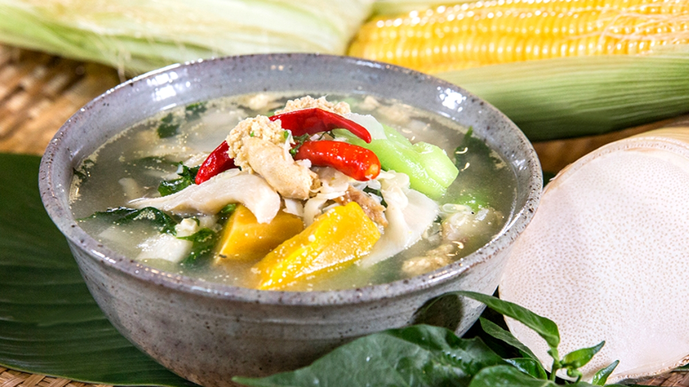
Ingredients
Fish (Snakehead or Catfish)
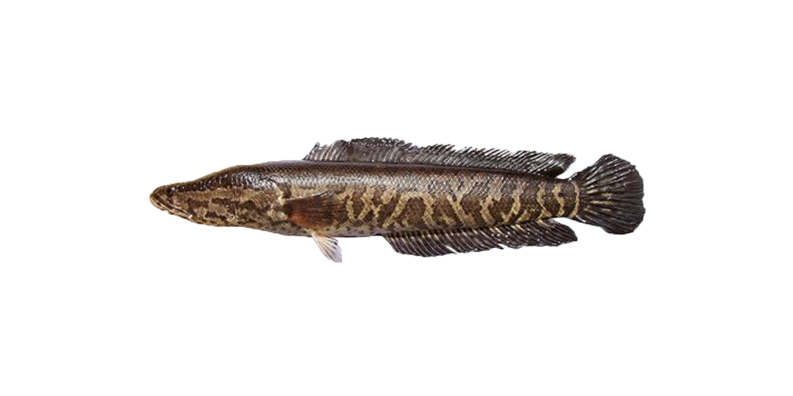
300g
Buy NowKroeung (Lemongrass Paste)
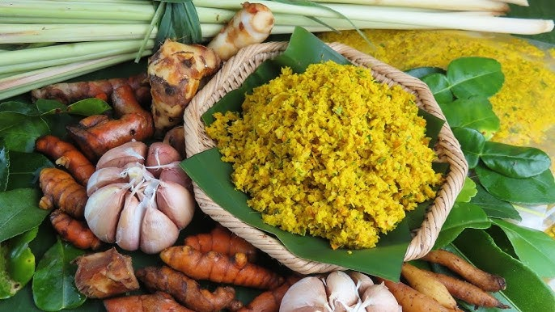
3 tbsp
Buy NowPumpkin

150g
Buy NowLuffa Gourd / Winter Melon
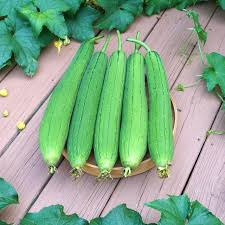
100g
Buy NowIvy Gourd leaves
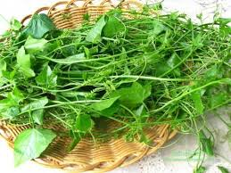
100g
Buy NowTaro
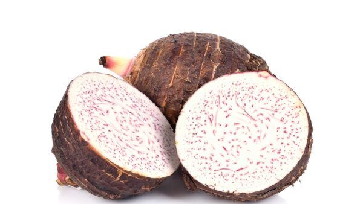
100g
Buy NowMushrooms
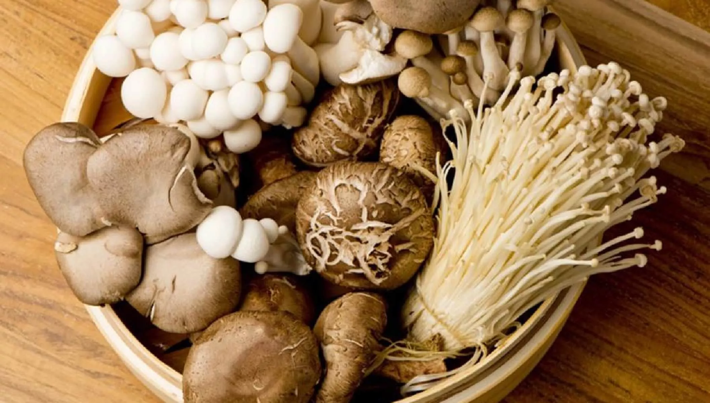
100g
Buy NowFish Sauce
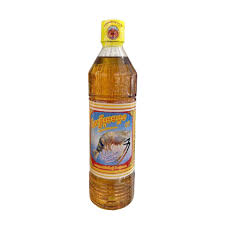
1 tbsp
Buy NowSugar
1 tsp
Buy NowPrahok
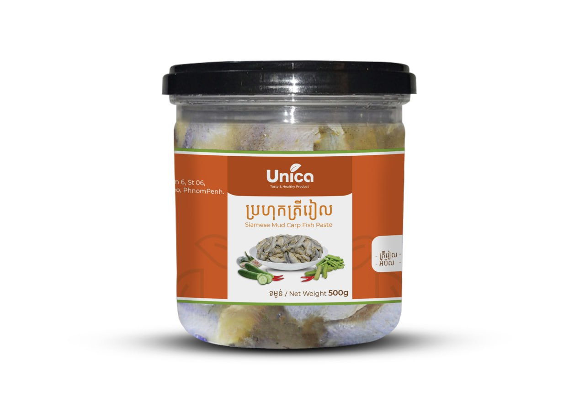
1–2 tbsp
Buy NowBonlea P'em
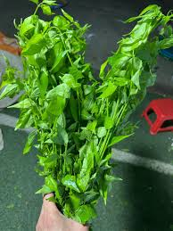
150g
Buy NowFresh Herbs (Basil or Moringa Leaves)
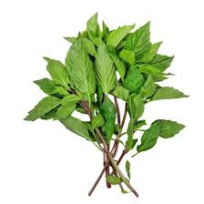
1 handful
Buy Now-
Step 1: Prepare ingredients
- Cut fish into pieces
- Slice all vegetables
- Prepare kroeung paste
-
Step 2: Cook kroeung
- Heat a pot with a little oil
- Add kroeung and prahok and stir until fragrant
-
Step 3: Add fish and water
- Add fish into the pot
- Add water
- Bring to a boil
-
Step 4: Add vegetables
- Add pumpkin, taro, slerk bas, mushrooms, bonlea p'em and luffa gourd
- Cook until soft
-
Step 5: Season
- Add fish sauce and sugar
- Simmer for 15–20 minutes
-
Step 6: Finish
- Add herbs and Ivy Gourd leaves
- Taste and adjust seasoning
- Serve hot with rice